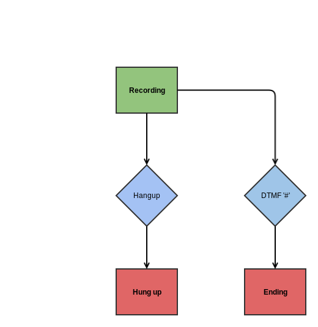
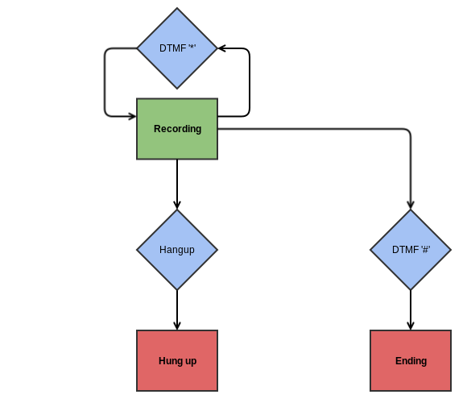
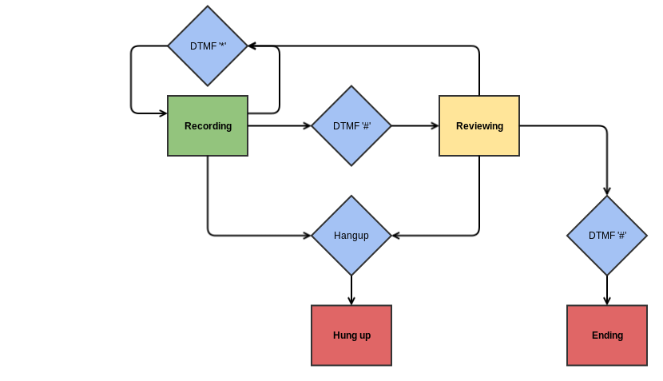

title: ARI and Media: Part 1 - Recording pageid: 30277826
The Recording API¶
Recordings in ARI are divided into two main categories: live and stored. Live recordings are those that are currently being recorded on a channel or bridge, and stored recordings are recordings that have been completed and saved to the file system. The API for the /recordings resource can be found here.
Live recordings can be manipulated as they are being made, with options to manipulate the flow of audio such as muting, pausing, stopping, or canceling the recording. Stored recordings are simply files on the file system on which Asterisk is installed. The location of stored recordings is in the /recording subdirectory of the configured astspooldir in asterisk.conf. By default, this places recordings in /var/spool/asterisk/recording.
Channels can have their audio recorded using the /channels/{channelId}/record resource, and Bridges can have their audio recorded using the [/bridges/{bridgeId}/record](/Asterisk+13+Bridges+REST+API#Asterisk13BridgesRESTAPI-record) resource.
Voice Mail Application Skeleton¶
Our application to record voice mails will be based on the following skeleton. As we add new features, we will create new states for our state machine, and add a few extra lines to our application skeleton in order to link the states together appropriately.
40%On this Page
vm-record.py
pytrue#!/usr/bin/env python
import ari
import logging
import time
import os
import sys
from event import Event
from state_machine import StateMachine
# As we add more states to our state machine, we'll import the necessary
# states here.
logging.basicConfig(level=logging.ERROR)
LOGGER = logging.getLogger(__name__)
client = ari.connect('http://localhost:8088', 'asterisk', 'asterisk')
class VoiceMailCall(object):
def __init__(self, ari_client, channel, mailbox):
self.client = ari_client
self.channel = channel
self.vm_path = os.path.join('voicemail', mailbox, str(time.time()))
self.setup_state_machine()
def setup_state_machine(self):
# This is where we will initialize states, create a state machine, add
# state transitions to the state machine, and start the state machine.
def stasis_start_cb(channel_obj, event):
channel = channel_obj['channel']
channel_name = channel.json.get('name')
mailbox = event.get('args')[0]
print("Channel {0} recording voicemail for {1}".format(
channel_name, mailbox))
channel.answer()
VoiceMailCall(client, channel, mailbox)
client.on_channel_event('StasisStart', stasis_start_cb)
client.run(apps=sys.argv[1])
With a few modifications, this same application skeleton can be adapted for use with non-voice mail applications. The biggest voice mail-specific thing being done here is the calculation of the path for voice mail recordings based on the application argument. The intended use of this application is something like the following:
This way, when calling any three-digit extension that begins with the number '3', the user will call into the application with the mailbox dialled (e.g. dialling "305" will allow the user to leave a message for mailbox "305").
Basic Voice Mail Recording¶
We've seen a lot of the underlying concepts for our application, so let's actually make something useful now. We'll start with a very simple application that allows callers to record a message upon entering the application. When the caller has completed recording the message, the caller may press the '#' key or may hang up to accept the recording. Here is a state machine diagram for the application:

Notice that even though DTMF '#' and a caller hangup result in the same end result that there are two separate states that are transitioned into. This is because our code needs to behave differently at the end of a voice mail call based on whether the channel has been hung up or not. In short, the "Ending" state in the diagram will forcibly hang up the channel, whereas the "Hung up" state does not need to do so.
For this, we will be defining three states: recording, hungup, and ending. The following is the code for the three states:
recording_state.py
pytruefrom event import Event
class RecordingState(object):
state_name = "recording"
def __init__(self, call):
self.call = call
self.hangup_event = None
self.dtmf_event = None
self.recording = None
def enter(self):
print "Entering recording state"
self.hangup_event = self.call.channel.on_event('ChannelHangupRequest',
self.on_hangup)
self.dtmf_event = self.call.channel.on_event('ChannelDtmfReceived',
self.on_dtmf)
self.recording = self.call.channel.record(name=self.call.vm_path,
format='wav',
beep=True,
ifExists='overwrite')
print "Recording voicemail at {0}".format(self.call.vm_path)
def cleanup(self):
print "Cleaning up event handlers"
self.dtmf_event.close()
self.hangup_event.close()
def on_hangup(self, channel, event):
print "Accepted recording {0} on hangup".format(self.call.vm_path)
self.cleanup()
self.call.state_machine.change_state(Event.HANGUP)
def on_dtmf(self, channel, event):
digit = event.get('digit')
if digit == '#':
rec_name = self.recording.json.get('name')
print "Accepted recording {0} on DTMF #".format(rec_name)
self.cleanup()
self.recording.stop()
self.call.state_machine.change_state(Event.DTMF_OCTOTHORPE)
When entered, the state sets up listeners for hangup and DTMF events on the channel, since those are the events that will cause the state to change. In all cases, before a state change occurs, the cleanup() function is invoked to remove event listeners. This way, the event listeners set by the recording state will not accidentally still be set up when the next state is entered. This same cleanup() method will be used for all states we create that set up ARI event listeners.
The stop method causes a live recording to finish and be saved to the file system. Notice that the on_hangup() method does not attempt to stop the live recording. This is because when a channel hangs up, any live recordings on that channel are automatically stopped and stored.
The other two states in the state machine are much simpler, since they are terminal states and do not need to watch for any events.
ending_state.py
pytrueclass EndingState(object):
state_name = "ending"
def __init__(self, call):
self.call = call
def enter(self):
channel_name = self.call.channel.json.get('name')
print "Ending voice mail call from {0}".format(channel_name)
self.call.channel.hangup()
| ending_state.js | |
|---|---|
hangup_state.py
pytrueclass HungUpState(object):
state_name = "hungup"
def __init__(self, call):
self.call = call
def enter(self):
channel_name = self.call.channel.json.get('name')
print "Channel {0} hung up".format(channel_name)
| hungup_state.js | |
|---|---|
These two states are two sides to the same coin. The EndingState is used to end the call by hanging up the channel, and the HungUpState is used to terminate the state machine when the caller has hung up. You may find yourself wondering why a HungUpState is needed at all. For our application, it does not do much, but it's a great place to perform post-call logic if your application demands it. See the second reader exercise on this page to see an example of that.
Using the application skeleton we set up earlier, we can make the following modifications to accommodate our state machine:
vm-call.py
pytrue# At the top of the file
from recording_state import RecordingState
from ending_state import EndingState
from hungup_state import HungUpState
# Inside our VoiceMailCall class
def setup_state_machine(self):
hungup_state = HungUpState(self)
recording_state = RecordingState(self)
ending_state = EndingState(self)
self.state_machine = StateMachine()
self.state_machine.add_transition(recording_state, Event.DTMF_OCTOTHORPE,
ending_state)
self.state_machine.add_transition(recording_state, Event.HANGUP,
hungup_state)
self.state_machine.start(recording_state)
The following is a sample output of a user calling the application and pressing the '#' key when finished recording
Channel PJSIP/200-00000003 recording voicemail for 305
Entering recording state
Recording voicemail at voicemail/305/1411497846.53
Accepted recording voicemail/305/1411497846.53
Cleaning up event handlers
Ending voice mail call from PJSIP/200-00000003
silverseagreenReader Exercise 1solidblackCurrently, the voicemails being recorded are all kept in a single "folder" for a specific mailbox. See if you can change the code to record messages in an "INBOX" folder on the mailbox instead.silverseagreenReader Exercise 2solidblackEndingState and HungUpState don't do much of anything at the moment. States like these can be great in voice mail applications for updating the message-waiting state of mailboxes on a system. If you're feeling industrious, read the API for the /mailboxes resource in ARI. Try to change HungUpState and EndingState to update the message-waiting status of a mailbox when a new message is left. To keep the exercise simple, for now you can assume the following:
- The number of "old" messages in a mailbox is always 0
- Since you are more concerned with alerting the mailbox owner that there exist new messages, do not try to count the messages in the mailbox. Instead, just state that there is 1 new message. Cancelling a Recording ======================
Now we have a simple application set up to record a message, but it's pretty bare at the moment. Let's start expanding some. One feature we can add is the ability to press a DTMF key while recording a voice mail to cancel the current recording and re-start the recording process. We'll use the DTMF '*' key to accomplish this. The updated state machine diagram looks like the following:

All that has changed is that there is a new transition, which means a minimal change to our current code to facilitate the change. In our recording_state file, we will rewrite the on_dtmf method as follows:
recording_state.py
pytrue def on_dtmf(self, channel, event):
digit = event.get('digit')
if digit == '#':
rec_name = self.recording.json.get('name')
print "Accepted recording {0} on DTMF #".format(rec_name)
self.cleanup()
self.recording.stop()
self.call.state_machine.change_state(Event.DTMF_OCTOTHORPE)
# NEW CONTENT
elif digit == '\*':
rec_name = self.recording.json.get('name')
print "Canceling recording {0} on DTMF \*".format(rec_name)
self.cleanup()
self.recording.cancel()
self.call.state_machine.change_state(Event.DTMF_STAR)
The first part of the method is the same as it was before, but we have added extra handling for when the user presses the '*' key. The cancel() method for live recordings causes the live recording to be stopped and for it not to be stored on the file system.
We also need to add our new transition while setting up our state machine. Our VoiceMailCall::setup_state_machine() method now looks like:
vm-call.py
pytrue def setup_state_machine(self):
hungup_state = HungUpState(self)
recording_state = RecordingState(self)
ending_state = EndingState(self)
self.state_machine = StateMachine()
self.state_machine.add_transition(recording_state, Event.DTMF_OCTOTHORPE,
ending_state)
self.state_machine.add_transition(recording_state, Event.HANGUP,
hungup_state)
self.state_machine.add_transition(recording_state, Event.DTMF_STAR,
recording_state)
self.state_machine.start(recording_state)
This is exactly the same as it was, except for the penultimate line adding the Event.DTMF_STAR transition. Here is sample output for when a user calls in, presses '*' twice, and then presses '#' to complete the call
Channel PJSIP/200-00000007 recording voicemail for 305
Entering recording state
Recording voicemail at voicemail/305/1411498790.65
Canceling recording voicemail/305/1411498790.65 on DTMF \*
Cleaning up event handlers
Entering recording state
Recording voicemail at voicemail/305/1411498790.65
Canceling recording voicemail/305/1411498790.65 on DTMF \*
Cleaning up event handlers
Entering recording state
Recording voicemail at voicemail/305/1411498790.65
Accepted recording voicemail/305/1411498790.65 on DTMF #
Cleaning up event handlers
Ending voice mail call from PJSIP/200-00000007
silverseagreenReader Exercise 3solidblackWe have covered the stop() and cancel() methods, but live recordings provide other methods as well. In particular, there are pause(), which causes the live recording to temporarily stop recording audio, and unpause(), which causes the live recording to resume recording audio.
Modify the RecordingState to allow a DTMF digit of your choice to toggle pausing and unpausing the live recording.
silverseagreenReader Exercise 4solidblackOur application provides the ability to cancel recordings and re-record them, but it gives no ability to cancel the recording and end the call.
Modify the RecordingState to allow for a DTMF digit of your choice to cancel the recording and end the call.
Operating on Stored Recordings¶
So far, we've recorded a channel, stopped a live recording, and cancelled a live recording. Now let's turn our attention to operations that can be performed on stored recordings. An obvious operation to start with is to play back the stored recording. We're going to make another modification to our voice mail recording application that adds a "reviewing" state after a voicemail is recorded. In this state, a user that has recorded a voice mail will hear the recorded message played back to him/her. The user may press the '#' key or hang up in order to accept the recorded message, or the user may press '*' to erase the stored recording and record a new message in its place. Below is the updated state diagram with the new "reviewing" state added.

To realize this, here is the code for our new "reviewing" state:
reviewing_state.py
pytrueimport uuid
class ReviewingState(object):
state_name = "reviewing"
def __init__(self, call):
self.call = call
self.playback_id = None
self.hangup_event = None
self.playback_finished = None
self.dtmf_event = None
self.playback = None
def enter(self):
self.playback_id = str(uuid.uuid4())
print "Entering reviewing state"
self.hangup_event = self.call.channel.on_event("ChannelHangupRequest",
self.on_hangup)
self.playback_finished = self.call.client.on_event(
'PlaybackFinished', self.on_playback_finished)
self.dtmf_event = self.call.channel.on_event('ChannelDtmfReceived',
self.on_dtmf)
self.playback = self.call.channel.playWithId(
playbackId=self.playback_id, media="recording:{0}".format(
self.call.vm_path))
def cleanup(self):
self.playback_finished.close()
if self.playback:
self.playback.stop()
self.dtmf_event.close()
self.hangup_event.close()
def on_hangup(self, channel, event):
print "Accepted recording {0} on hangup".format(self.call.vm_path)
self.cleanup()
self.call.state_machine.change_state(Event.HANGUP)
def on_playback_finished(self, event):
if self.playback_id == event.get('playback').get('id'):
self.playback = None
def on_dtmf(self, channel, event):
digit = event.get('digit')
if digit == '#':
print "Accepted recording {0} on DTMF #".format(self.call.vm_path)
self.cleanup()
self.call.state_machine.change_state(Event.DTMF_OCTOTHORPE)
elif digit == '\*':
print "Discarding stored recording {0} on DTMF \*".format(self.call.vm_path)
self.cleanup()
self.call.client.recordings.deleteStored(
recordingName=self.call.vm_path)
self.call.state_machine.change_state(Event.DTMF_STAR)
The code for this state is similar to the code from RecordingState. The big difference is that instead of recording a message, it is playing back a stored recording. Stored recordings can be played using the channel's play() method (or as we have used in the python code, playWithId()). If the URI of the media to be played is prefixed with the "recording:" scheme, then Asterisk knows to search for the specified file where recordings are stored. More information on playing back files on channels, as well as a detailed list of media URI schemes can be found here. Note the method that is called when a DTMF '*' is received. The deleteStored() method can be used on the /recordings resource of the ARI client to delete a stored recording from the file system on which Asterisk is running.
One more thing to point out is the code that runs in on_playback_finished(). When reviewing a voicemail recording, the message may finish playing back before the user decides what to do with it. If this happens, we detect that the playback has finished so that we do not attempt to stop an already-finished playback once the user decides how to proceed.
We need to get this new state added into our state machine, so we make the following modifications to our code to allow for the new state to be added:
vm-call.py
pytrue#At the top of the file
from reviewing_state import ReviewingState
#In VoiceMailCall::setup_state_machine
def setup_state_machine(self):
hungup_state = HungUpState(self)
recording_state = RecordingState(self)
ending_state = EndingState(self)
reviewing_state = ReviewingState(self)
self.state_machine = StateMachine()
self.state_machine.add_transition(recording_state, Event.DTMF_OCTOTHORPE,
reviewing_state)
self.state_machine.add_transition(recording_state, Event.HANGUP,
hungup_state)
self.state_machine.add_transition(recording_state, Event.DTMF_STAR,
recording_state)
self.state_machine.add_transition(reviewing_state, Event.HANGUP,
hungup_state)
self.state_machine.add_transition(reviewing_state, Event.DTMF_OCTOTHORPE,
ending_state)
self.state_machine.add_transition(reviewing_state, Event.DTMF_STAR,
recording_state)
self.state_machine.start(recording_state)
The following is the output from a sample call. The user records audio, then presses '#'. Upon hearing the recording, the user decides to record again, so the user presses '*'. After re-recording, the user presses '#'. The user hears the new version of the recording played back and is satisfied with it, so the user presses '#' to accept the recording.
Channel PJSIP/200-00000009 recording voicemail for 305
Entering recording state
Recording voicemail at voicemail/305/1411501058.42
Accepted recording voicemail/305/1411501058.42 on DTMF #
Cleaning up event handlers
Entering reviewing state
Discarding stored recording voicemail/305/1411501058.42 on DTMF \*
Entering recording state
Recording voicemail at voicemail/305/1411501058.42
Accepted recording voicemail/305/1411501058.42 on DTMF #
Cleaning up event handlers
Entering reviewing state
Accepted recording voicemail/305/1411501058.42 on DTMF #
Ending voice mail call from PJSIP/200-00000009
silverseagreenReader Exercise 5solidblackIn the previous section we introduced the ability to delete a stored recording. Stored recordings have a second operation available to them: copying. The copy() method of a stored recording can be used to copy the stored recording from one location to another.
For this exercise modify ReviewingState to let a DTMF key of your choice copy the message to a different mailbox on the system. When a user presses this DTMF key, the state machine should transition into a new state called "copying." The "copying" state should gather DTMF from the user to determine which mailbox the message should be copied to. If '#' is entered, then the message is sent to the mailbox the user has typed in. If '*' is entered, then the copying operation is cancelled. Both a '#' and a '*' should cause the state machine to transition back into ReviewingState.
As an example, let's say that you have set DTMF '0' to be the key that the user presses in ReviewingState to copy the message. The user presses '0'. The user then presses '3' '2' '0' '#'. The message should be copied to mailbox "320", and the user should start hearing the message played back again. Now let's say the user presses '0' to copy the message again. The user then presses '3' '2' '1' '0' '*'. The message should not be copied to any mailbox, and the user should start hearing the message played back again.
Recording Bridges¶
This discussion of recordings has focused on recording channel audio. It's important to note that bridges also have an option to be recorded. What's the difference? Recording a channel's audio records only the audio coming from a channel. Recording a bridge records the mixed audio coming from all channels into the bridge. This means that if you are attempting to do something like record a conversation between participants in a phone call, you would want to record the audio in the bridge rather than on either of the channels involved.
Once recording is started on a bridge, the operations available for the live recording and the resulting stored recording are exactly the same as for live recordings and stored recordings on a channel. Since the API for recording a bridge and recording a channel are so similar, this page will not provide any examples of recording bridge audio.